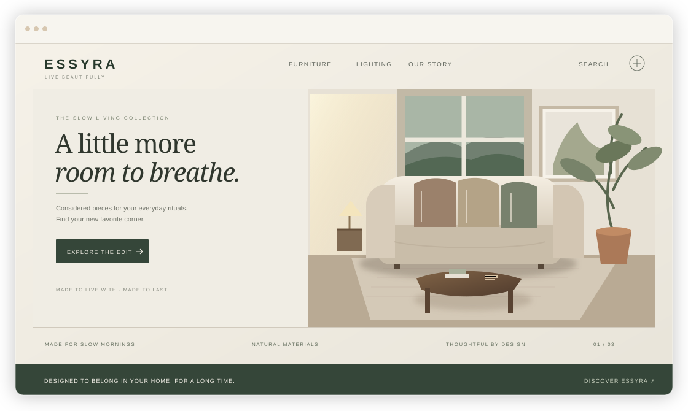

01 / WEB + AIFULL-STACK WEB · DBMS COURSE PROJECT
ESSYRA↗
An AI-powered furniture shopping experience. I built a product catalogue and order management system backed by Supabase, then integrated support and interior-design recommendation agents to make the experience more helpful.
Also includes an interactive video home tour and formal SRS/SDS documentation.